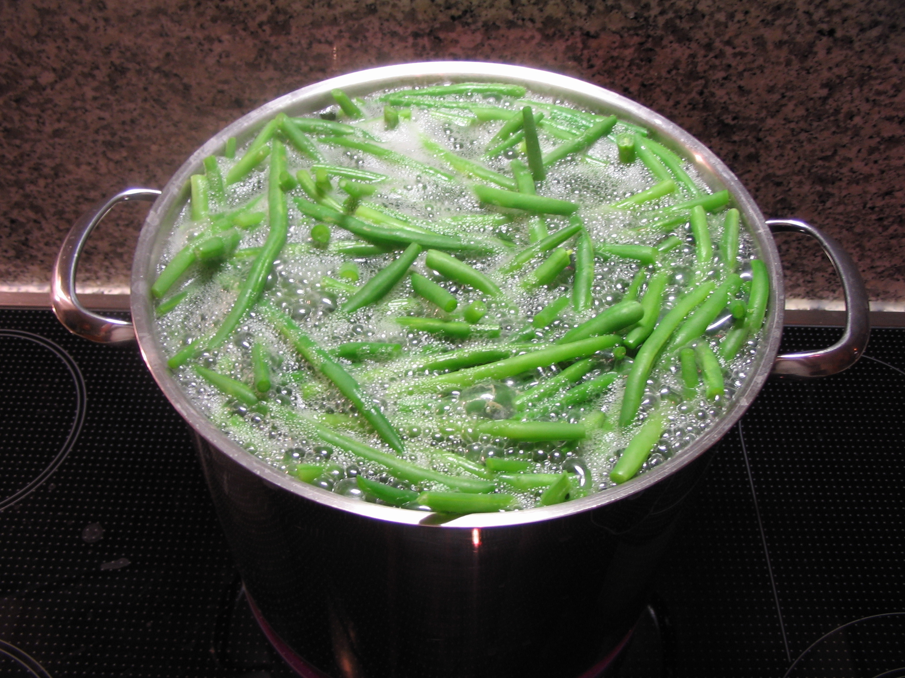

The vegetables are cooked just until done but still lightly crisp, the butter adds flavor and coats each piece of vegetable with a subtle shimmer, and the herbs provide the aroma that, coupled with the signals that your eyes send to your brain, tells you that you must have a huge portion of those gorgeous mixed veggies.
Ingredients
4 to 6 cups mixed vegetables
Butter
Salt
Pepper
Chopped herbs
Instructions
Fill a pot with water. Add salt. Bring to the boil.
While waiting for the water to boil, fill a large bowl with cold water and ice.
Blanch the vegetables separately if each requires a different cooking time (see post on blanching). How long each needs to stay in the hot water depends on the size of the pieces, the maturity of the vegetable and the amount of vegetables you put in the pot in proportion to the water.
Blanching

Is a must for almost all vegetables to be frozen. It stops enzyme actions which can cause loss of flavor, color and texture. Blanching cleanses the surface of dirt and organisms, brightens the color and helps retard loss of vitamins.
What is the purpose of blanching?
Blanching stops enzyme actions which otherwise cause loss of flavor, color and texture. In addition, blanching removes some surface dirt and microorganisms, brightens color and helps slow vitamin losses. It also wilts greens and softens some vegetables (broccoli, asparagus) and makes them easier to pack.
As each vegetable finishes blanching, scoop out and dump in the bowl of iced water. Scoop out and drain.
When all the vegetables have been blanched and drained, place in a large bowl.
Drizzle the butter over the vegetables, add the herbs and season with salt and pepper. Toss gently. Taste a piece. Adjust the seasonings, if needed.